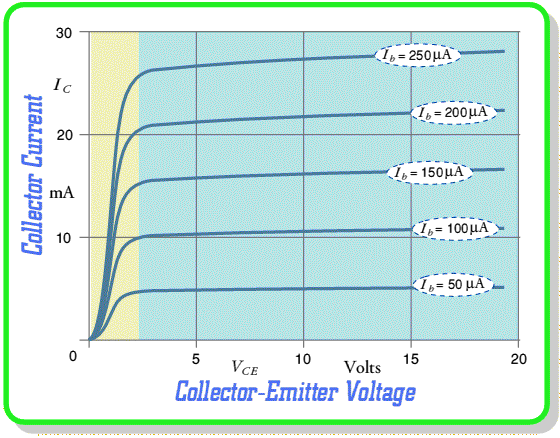

For this experiment, the following connections must be made with an NPN transistor (ex. 2N2222):
1) Connect the Emitter to Ground (GND)
2) Connect the Collector to PVS1 via a 1KOhm resistor. PVS2 will be used to sweep the voltage across the Collector and Emitter( VCE )
3) Connect CH3 to the collector of the transistor. This will be used to measure the voltage drop across the transistor.
4) Connect the Base to PVS3 via a 200KOhm resistor. PVS3 will be used to set the base current ( VB = Vpvs3 / 200K )

The above plot of characteristic curves gives a picture of
what we can expect from a working Bipolar Transistor. Each curve shows
how the collector current, IC, varies with the Collector-Emitter voltage, VCE, for a specific fixed value of the Base current, IB.
This kind of characteristic curve 'family' is one of the most useful
ones when it comes to building amplifiers, etc, using Bipolar
Transistors as it contains quite a lot of detailed information.
When the applied VCE level is 'large enough'
(typically above two or three volts, shown as the region in blue) the
Collector is able to to remove free electrons from the Base almost as
quickly as they Emitter injects them. Hence we get a current which is
set by the Base-Emitter voltage and see a current gain value which
doesn't alter very much if we change either the base current or the
applied Collector potential.
However, when we reduce the Collector potential so that VCE
is less than a couple of volts, we find that it is no longer able to
efficiently remove electrons from the Base. This produces a sort of
partial 'roadblock' effect where free electrons tend to hang about in
the Base region. (cream coloured region) These makes the Base region
seem 'more negative' to any electrons in the Emitter and tends to reduce
the overall flow of current through the device. As we lower the
Collector potential to become almost the same as that of the Base and
Emitter it eventually stops drawing any electrons out of the device and
the Collector current falls towards zero.
The precise voltage at which the Collector ceases to be an effective
'collector of electrons' depends on the temperature and the
manufacturing details of the transisor. In general we can expect most
Bipolar Transistors to work efficiently provided that we arrange for a VCE
value of at least two or three volts - and preferrably five volts or
more. Such a device can be used as an effective amplifier. Lower
voltages may prevent it from working correctly.
Note that the graphs shown on this page are only meant as a
general guide. Some transistors can work with much higher currents, or
have much higher current gains, etc. However, the general pattern of
behaviour of all Bipolars is essentially the same as described in these
pages.
Content and pages by: Jim Lesurf (jcgl@st-and.ac.uk)
University of St. Andrews, St Andrews, Fife KY16 9SS, Scotland.